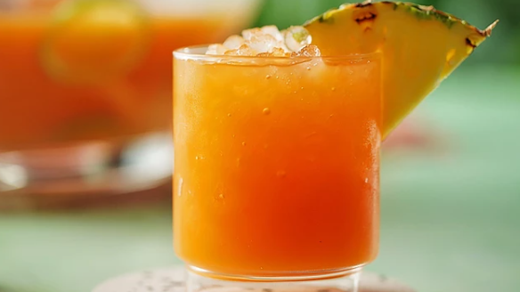

Jamaican Rum Punch

Description
A tropical rum punch made with three varieties of rum, grenadine, pineapple juice, fresh lime juice, and orange juice for a refreshingly fruity party drink. Fresh lime juice is key to getting the unique flavor of this punch.
Ingredients
- 2 ½ cups pineapple juice
- 2 ½ cups orange juice
- 1 cup 151 proof rum (such as Bacardi®)
- ½ cup dark rum (such as Meyer's®)
- ¼ cup coconut-flavored rum (such as Malibu®)
- ¼ cup fresh lime juice
- 3 tablespoons grenadine syrup
- 1 orange, sliced
- 1 lime, sliced
- 1 lemon, sliced
Steps
- Stir pineapple juice, orange juice, 151 proof rum, dark rum, coconut-flavored rum, lime juice, and grenadine syrup together in a punch bowl. Float orange slices, lime slices, and lemon slices in the punch.
- Ladle the punch into ice filled glasses, or chill the punch in the refrigerator until ready to serve.
Return to Homepage